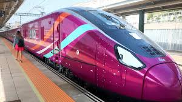
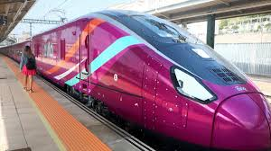

Renfe AVLO
 

Renfe AVLO is a high-speed train service launched by Renfe, Spain's national railway operator, in 2021. This service aims to provide affordable travel options within Spain's extensive high-speed rail network. AVLO is designed to make train travel accessible to a broader audience, offering competitive pricing while ensuring a comfortable experience.
The AVLO trains are modern and feature comfortable seating with ample legroom. Passengers can enjoy amenities such as Wi-Fi, power outlets, and onboard food and beverage options. The trains can travel at speeds of up to 300 km/h (approximately 186 mph), significantly reducing travel times between major cities like Madrid, Barcelona, and Valencia.
By connecting these key destinations, AVLO provides convenience for both tourists and residents, catering to those looking for budget-friendly travel options. Additionally, the service emphasizes sustainability, offering a greener alternative to car and air travel, thus supporting efforts to reduce carbon emissions in Spain.
Overall, Renfe AVLO represents a commitment to making high-speed rail travel not only efficient and comfortable but also environmentally responsible, enhancing the travel experience for all.